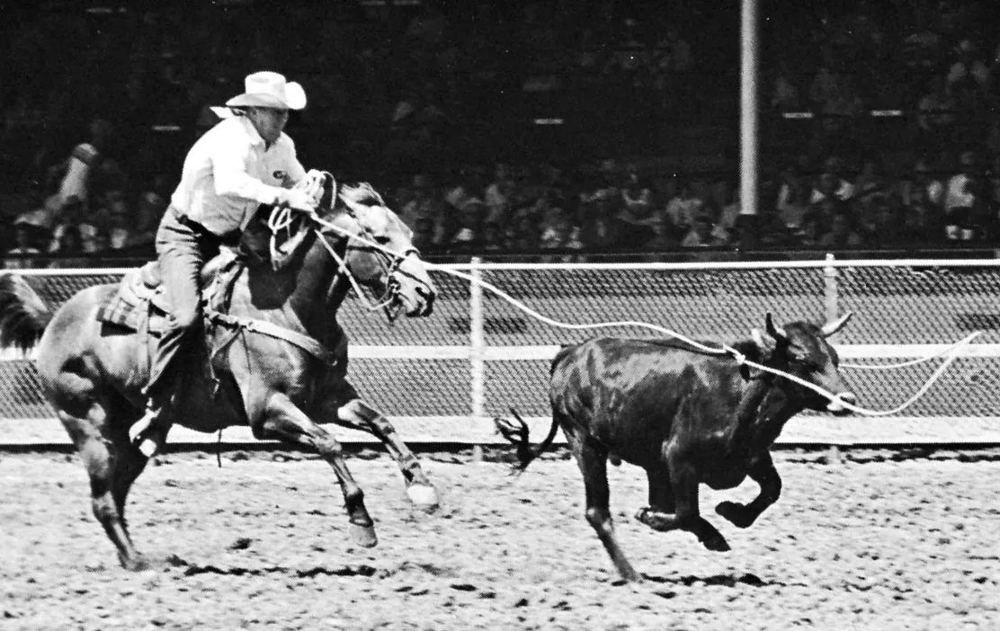

On Indexicality
October 3, 2025

In contemporary media theory, the definition of "indexicality" remains a point of contention. A central dispute stems from Mary Ann Doane's¹ interpretation of C.S. Peirce, in which she distinguishes the index as a "trace" from the index as "deixis." I advocate, however, for defining indexicality with a greater degree of ontological purity: indexicality is, and only is, the material trace deposited by physical, causal contact.
The index as deixis—the pointing finger—is not the ideal or purest form of indexicality, but rather a pragmatic concept that becomes operative only in specific contexts. As the films discussed by Doane demonstrate, the importance of "deixis" is built upon the special significance granted to the "here and now." To attribute this situational ambiguity to indexicality itself, however, is an over-interpretation. Without an object to point to, the finger loses its signifying function, becoming an empty signifier in the Saussurean sense. The so-called "this" is essentially a lacuna within the symbolic structure (e.g., the basic "A is B" formation), a potential component detached from its constituent parts—a yet-uncompleted fragment of iconicity.
Doane argues that the power of cinema lies in a dialectic between "deixis" and "trace"—that film is both a trace of the past and, in the present moment of its screening, points to a believable world. However, this act of pointing in the present is actually closer to what Tom Gunning calls "visual accuracy,"² as it relies on association sparked by belief, not on direct causation. In the film Cleopatra, for example, the temple images photochemically etched onto the nitrate film stock convince us that we are seeing real Egyptian architecture due to their resemblance (i.e., iconicity). But as indexical traces in the strict sense, these images point not to ancient Egypt, but to the building materials, paint, and labor of the film set. The film Decasia more clearly reveals this distinction: it indexically points to the volcano it filmed via a photochemical process, and it also indexes the physicochemical process of the film's own decay. These two indexical functions are of the same kind, and there is only one kind. When Decasia's images still possess visual accuracy, they may have iconicity—the volcano can symbolize a plot point or an environment—but this is not the same as indexicality.
Approaching this from the deep structure of semiotics, the key question, as Heidegger might have noted, is not A or B, but the meaning of the copula "is." The copula is the core of our primordial grammatical structure and of the Logos; it both connects and generates, constituting our understanding of and dwelling in the world. For this reason, it is more logical to understand indexicality as a "trace," because this definition aligns more closely with the dynamic function of the copula. The essence of the "trace" lies in its inclusion of a past action or a "was," an action that simultaneously implies an agent and a patient. The constitutive action is crucial: it entails both temporal causality (the action has already occurred, and what we see is its effect and residue) and material causality (this effect and residue always have a material basis). The medium is the foundation that bears this temporo-material causality. This is also why indexicality is not unique to cinema but can be explained as a universal property of media. Gunning's footprint, Bazin's death mask, and the mercury thermometer all attest to this.
The composition of the Chinese word for index, "索引" (suǒyǐn), offers a unique perspective on this understanding. "索" (suǒ) originally meant twisting grass into rope and was extended to mean "to search" or "to seek," an action. "引" (yǐn) means to pull, a directional exertion of force. Together, "索引" is an act of capture. However, the mere fact of capturing the prey is not enough to establish ownership; a social consensus is required to recognize that "because you captured it, it is yours." This establishment is a contractual relationship in which people "guarantee" to one another that they will recognize the concept. Notably, the word "guarantee" appears repeatedly in the texts of indexicality theorists. This implies that indexicality, beyond its material basis (the fact of capture), must rely on a powerful discursive consensus to secure its validity.
By the same token, the indexicality of a photograph is not only grounded in the photochemical reaction but also in a discursive apparatus that we collectively trust. We reach a consensus to believe that the scientific process of photochemistry "guarantees" that the trace indeed points to a real, past event. Therefore, a more precise model for indexicality should be: its ontology is the causal-material structure of the "action-trace," while its efficacy as evidence or truth in society must be "guaranteed" and actualized by a powerful discursive apparatus.
To narrow the concept of indexicality to a trace governed by physical (including chemical and biological) causality is not to dismiss the importance of iconicity or "revelation," but to allow for a clearer analysis. This is perhaps what Bernard Stiegler attempts³ when he discusses our simultaneous fear of and fascination with Bertolt Brecht's "ghostly light." What he describes is the shock produced by the powerful, seamless causal chain of the photochemical process. This attraction transcends mere visual resemblance; it stems from a techno-mechanical, almost deterministic conception of causality that proves, in an undeniable way, what Roland Barthes called the "that-has-been."⁴ The thermometer, the stethoscope, thermal imaging, and sonar are other forms of this time-and-physics-based indexicality. They provide a similar shock: an irrefutability that transcends human subjectivity, a "sublime of objectivity."⁵ It is within this sublime that indexicality is constructed as truth.
Crucially, however, our trust in this techno-mechanical guarantee is itself ratified by a consensus within a discursive apparatus. In other words, there exists a Foucauldian "regime of truth" that governs what we pay attention to, recognize, and what is ultimately revealed from the techno-mechanical trace. When photography was first introduced to the East, for instance, it was sometimes regarded as a malicious device for capturing souls. Under that discursive framework, its "sublime of objectivity" had not yet been established. Only after a scientific, causal explanation was forcibly popularized did indexicality become an article of faith. We have, in effect, established a scientific-discursive apparatus to persuade ourselves to trust indexicality. Of course, for objects that are primarily symbolic, like a painting, other specific regimes of truth apply, such as the discipline of Art History's focus on authorial intent.
In summary, if indexicality is first and foremost a temporo-physical causality, then from this perspective, everything possesses its own indexicality: an AI-generated image indexes its computational processes and electron flows, while a painting indexes the artist's neural activity. This implies that for the study of indexicality to be meaningful, the crucial task is not to determine its presence or absence, but to grasp which causal chain is socially empowered and designated as a guarantor of evidence and truth. In other words, the social efficacy of "indexicality" is not intrinsic to its physical causality, but is established through discursive and institutional recognition within a specific "regime."
1. Mary Ann Doane, “The Indexical and the Concept of Medium Specificity,” in The Emergence of Cinematic Time: Modernity, Contingency, the Archive (Cambridge, MA: Harvard University Press, 2002), 162–89.
2. Tom Gunning, “What’s the Point of an Index? or, Faking Photographs,” NORDICOM Review 25, no. 1/2 (2004): 39–49.
3. Bernard Stiegler, “The Discrete Image,” in Echographies of Television: Filmed Interviews, by Jacques Derrida and Bernard Stiegler, trans. Jennifer Bajorek (Cambridge, UK: Polity Press, 2002), 146–65.
4. Roland Barthes, Camera Lucida: Reflections on Photography, trans. Richard Howard (New York: Hill and Wang, 1981).
5. Lorraine Daston and Peter Galison, Objectivity (New York: Zone Books, 2007).
All Rights Reserved © Juntao Yang